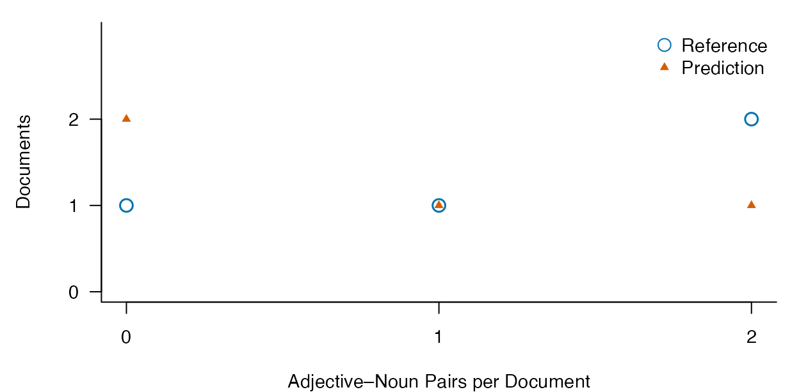

Trace adjective–noun dependencies from source context to document counts
Source:vignettes/dependency-pairs.Rmd
dependency-pairs.RmdWhich noun does an adjective modify?
In Big red balloons float, both big and
red modify balloons. Adjacent bigrams cannot represent
the first relation as a two-word sequence.
lexdiv_amod_pairs() instead reads supplied basic Universal
Dependencies (UD) and connects each selected pair to its two source
positions, context and document counts. It does not run a parser or
decide whether a phrase is idiomatic.
The initial feature is deliberately specific: a dependent tagged
ADJ, a head tagged NOUN, and an
amod relation (including subtypes). PROPN and
PRON heads are excluded. UD’s amod
relation is broader than this selected feature. The function also
does not reproduce the Penn-tag selection in Kyle and Eguchi (2024)
exactly.
The research question is whether annotation differences change the pairs and counts used in an analysis. A correct total does not establish that the same occurrences were found. A structurally valid tree can still have the wrong head.
Supply complete sentences and basic trees
Use lexdiv_import_annotations() to import the complete,
unnormalized output of an existing parser or human annotation process.
Keep punctuation and original sentence text. The input contract is:
| Table | Required information |
|---|---|
segments |
document_id, segment_id,
text; one sentence per segment, including empty inputs |
| token table | Same IDs; token_index starting at 1 in each sentence;
exact surface; upos, head,
deprel
|
| optional lexical units |
lemma, if lemma type counts are requested |
| provenance | Language, analyzer and version, dictionary and version, token unit and normalization; add model identity and any explicit projection choices |
head is numeric and refers to token_index
in the same sentence; root has head 0.
deprel and upos use UD labels. Convert missing
annotation fields to typed NA, not the literal underscore
used by CoNLL-U. Do not convert legitimate surface strings such as
NA into missing values. When adapting a parser table, map
its columns explicitly and preserve the relation between IDs and
heads.
This is not a general CoNLL-U reader. Multiword-token range records,
empty nodes, and syntactic words without individually matching original
surfaces are outside the current input contract. Enhanced edges in
deps/DEPS are rejected; explicitly select the
basic tree and record the projection when that is the research target.
See the CoNLL-U
specification. The importer never reconstructs original text from
normalized token strings.
Known head errors, self-links, cycles, inconsistent root labels and multiple roots raise errors. A valid complete tree has one root. These checks cannot verify that a declared segment is linguistically one sentence or that its syntactic analysis is correct.
Run an offline English/Japanese example
The installed example supplies authored annotations. It requires no model, corpus download or additional package. The Japanese sentence includes 赤い鳥 to exercise original Japanese source positions and the same declared feature; this does not establish comparable feature coverage across languages.
env <- new.env(parent = baseenv())
sys.source(system.file("examples", "amod-pairs.R", package = "ldfreq",
mustWork = TRUE), env)
example <- env$amod_pairs_example
reference <- lexdiv_amod_pairs(example$inputs$reference, unit = "lemma")
reference$occurrences[c("document_id", "dependent_term", "head_term",
"token_distance", "pre", "keyword", "post")]
#> document_id dependent_term head_term token_distance pre
#> 1 english big balloon 2
#> 2 english red balloon 1 Big
#> 3 wrong_head small bird 1
#> 4 wrong_head large fish 1 Small birds see
#> 5 japanese 赤い 鳥 1
#> 6 unavailable quiet bird 1
#> 7 partial red bird 1
#> 8 partial blue bird 1
#> keyword post
#> 1 Big red balloons float.
#> 2 red balloons float.
#> 3 Small birds see large fish.
#> 4 large fish .
#> 5 赤い鳥 を見る。
#> 6 Quiet birds rest.
#> 7 Red birds fly.
#> 8 Blue birds fly.keyword spans both endpoints and all intervening text.
The separate dependent_start/dependent_end and
head_start/head_end columns identify the
selected words. Positions are one-based, inclusive Unicode codepoints
within the original sentence. Keep document and segment IDs with these
columns when returning to KWIC or comparing occurrences. A row number is
not an occurrence identity.
Report counts beside coverage
predicted <- example$predicted
predicted$documents[c("document_id", "tokens", "analyzed_tokens", "token_coverage",
"observed_pairs", "pairs", "pairs_with_unit", "types", "status")]
#> document_id tokens analyzed_tokens token_coverage observed_pairs pairs
#> 1 english 5 5 1.0 1 1
#> 2 wrong_head 6 6 1.0 2 2
#> 3 japanese 5 5 1.0 0 0
#> 4 zero 3 3 1.0 0 0
#> 5 unavailable 4 0 0.0 0 NA
#> 6 partial 8 4 0.5 1 NA
#> 7 empty 0 0 NA 0 0
#> pairs_with_unit types status
#> 1 1 1 complete
#> 2 2 2 complete
#> 3 0 0 complete
#> 4 0 0 complete
#> 5 0 NA incomplete_annotation
#> 6 1 NA incomplete_annotation
#> 7 0 0 empty
predicted$segments[c("document_id", "segment_id", "missing_heads",
"missing_relations", "missing_upos", "status")]
#> document_id segment_id missing_heads missing_relations missing_upos
#> 1 english s1 0 0 0
#> 2 wrong_head s1 0 0 0
#> 3 japanese s1 0 0 0
#> 4 zero s1 0 0 0
#> 5 unavailable s1 4 4 0
#> 6 partial s1 0 0 0
#> 7 partial s2 4 4 0
#> 8 empty s1 0 0 0
#> status
#> 1 complete
#> 2 complete
#> 3 complete
#> 4 complete
#> 5 incomplete_annotation
#> 6 complete
#> 7 incomplete_annotation
#> 8 emptyAny missing head, relation or UPOS excludes that whole sentence. This
conservative rule prevents an unknown label from being silently
classified as a negative. The partial document retains one
observed pair from a complete sentence, but its total pair count is
unknown because its other sentence is incomplete. zero has
a complete analysis with no selected relation; unavailable
has no analyzed sentence. Their totals are respectively 0 and
NA. Empty inputs have zero counts, an empty
status and undefined token coverage.
Token coverage uses all supplied syntactic tokens, including
punctuation, as its denominator. counts and
observed_types summarize the observed subset, not an
estimate for excluded sentences. Surface matching is case-sensitive;
selecting unit = "lemma" uses exactly the supplied lemmas.
If a detected pair is missing either lemma, it remains in the occurrence
table but contributes no known type key. pairs_with_unit
reports this second source of incompleteness, and a complete type total
is NA.
Compare occurrences as well as totals
example$differences
#> document_id reference_pairs predicted_pairs delta_pairs reference_types
#> 1 english 2 1 -1 2
#> 2 wrong_head 2 2 0 2
#> 3 japanese 1 0 -1 1
#> 4 zero 0 0 0 0
#> 5 unavailable 1 NA NA 1
#> 6 partial 2 NA NA 2
#> 7 empty 0 0 0 0
#> predicted_types reference_coverage predicted_coverage evaluated tp fp fn
#> 1 1 1 1.0 TRUE 1 0 1
#> 2 2 1 1.0 TRUE 1 1 1
#> 3 0 1 1.0 TRUE 0 0 1
#> 4 0 1 1.0 TRUE 0 0 0
#> 5 NA 1 0.0 FALSE NA NA NA
#> 6 NA 1 0.5 FALSE NA NA NA
#> 7 0 NA NA TRUE 0 0 0
subset(example$comparison, document_id == "wrong_head")
#> document_id segment_id dependent_start dependent_end head_start head_end
#> 2 wrong_head s1 17 21 23 26
#> 5 wrong_head s1 1 5 7 11
#> 9 wrong_head s1 1 5 23 26
#> reference_present predicted_present evaluated outcome
#> 2 TRUE TRUE TRUE tp
#> 5 TRUE FALSE TRUE fn
#> 9 FALSE TRUE TRUE fpThe wrong_head document has two pairs under both
annotations, yet one intended pair was lost and another introduced. The
example joins both endpoints by source IDs and
positions, yielding one true positive, one false positive and one false
negative relative to the authored reference. Comparing word strings
alone would also lose the identity of repeated occurrences.
Incomplete documents remain in the differences table but are not
scored as complete-reference comparisons. Their unavailable predictions
are not reported as perfect zero-error results. The example is a
transparent comparison recipe, not a new general dependency-evaluation
API. It assumes common original text and segmentation; use
lexdiv_align_annotations() to examine segmentation changes
before defining a cross-segmentation dependency evaluation.
draw_pair_distributions <- function(example, monochrome = FALSE) {
d <- example$differences
keep <- d$evaluated & example$reference$documents$tokens > 0
d <- d[keep, ]
counts <- seq.int(0, max(d$reference_pairs, d$predicted_pairs))
reference_n <- tabulate(match(d$reference_pairs, counts), nbins = length(counts))
prediction_n <- tabulate(match(d$predicted_pairs, counts), nbins = length(counts))
colors <- if (monochrome) c("black", "black") else c("#0072B2", "#D55E00")
old <- par(family = "sans", bty = "l", las = 1, mar = c(4, 4.5, 1, 1))
on.exit(par(old))
ymax <- max(reference_n, prediction_n)
plot(counts, reference_n, type = "n", xaxt = "n", yaxt = "n",
ylim = c(0, ymax + 1), xlab = "Adjective–Noun Pairs per Document", ylab = "Documents")
axis(1, at = counts)
axis(2, at = seq.int(0, ymax))
points(counts, reference_n, pch = 21, bg = "white", col = colors[1], cex = 1.5, lwd = 1.5)
points(counts, prediction_n, pch = 17, col = colors[2], cex = .8)
legend("topright", c("Reference", "Prediction"), col = colors, pch = c(21, 17),
pt.bg = "white", pt.cex = c(1.5, .8), bty = "n")
invisible(d)
}
draw_pair_distributions(example)
This overlays the observed count distributions for four nonempty
documents; it does not estimate population effects or parser accuracy.
An open circle and a smaller triangle remain visible when frequencies
coincide. These few discrete counts do not justify a smooth density
curve. Identical count distributions can still conceal different source
occurrences, so retain the endpoint comparison. Use
monochrome = TRUE for black symbols. Place figure numbers,
titles and notes outside the image; see the report guide for final-size
export.
Save inputs and reproduce the result
path <- tempfile(fileext = ".rds")
saveRDS(example$inputs, path)
saved <- readRDS(path)
replayed <- lexdiv_amod_pairs(saved$predicted, unit = saved$unit)
stopifnot(identical(replayed, example$predicted))
unlink(path)For an empirical study, preserve annotation guidelines, sampling and reviewer decisions separately. Candidate KWIC review alone cannot discover all missed positive cases; independent complete-sentence annotation is needed to assess recall. Authored fixtures verify implementation behavior, not the accuracy of an English or Japanese parser, and a common API does not establish measurement equivalence between languages.
No reference corpus is bundled for this feature. MI requires dependency-specific joint counts, compatible marginals and opportunity totals; unigram frequencies or adjacent-bigram frequencies do not supply those quantities automatically. The present output ends at source-linked occurrences, counts and coverage.
Connect a real parser in R
The optional UDPipe R
package can supply tokenization, tags, lemmas and dependency parses
without Python. This recipe uses its complete
udpipe_annotate() output and the original sentence roster.
The sentence column and reconstructed offsets in a parser
table are not a substitute for your original source text.
Install udpipe separately and select a local model
appropriate to your study. For example, the English EWT UD 2.5 model is
available through
udpipe::udpipe_download_model("english-ewt", model_dir = "models").
This is an explicit download, outside package installation and routine
analysis. The model
distributor states CC BY-NC-SA 4.0 for these models; model terms are
separate from the package’s code license. Check the selected model’s
terms and training data. No model is bundled here, and a general English
model is not validated for your register or learner population merely
because this example runs.
To execute the following optional chunks, set
LDFREQ_UDPIPE_MODEL to the local model file before
rendering this guide, or run the code with model_file set
to that path. These chunks are not run in ordinary package builds. The
helper is an explicitly sourced recipe, not an exported API.
source(system.file("examples", "udpipe-amod.R", package = "ldfreq", mustWork = TRUE), local = TRUE)
stopifnot(file.exists(model_file), file.info(model_file)$size > 0)
model_sha256 <- digest::digest(file = model_file, algo = "sha256")
model <- udpipe::udpipe_load_model(model_file)
# Four authored inputs, including the empty document. This is not corpus data.
selected_docs <- c("english", "wrong_head", "zero", "empty")
roster <- subset(example$inputs$reference$segments, document_id %in% selected_docs,
select = c(document_id, segment_id, text))
roster$parser_id <- paste0("segment_", seq_len(nrow(roster)))
# Each caller-supplied sentence occupies one line; never silently remove line breaks.
stopifnot(!any(grepl("[\r\n]", roster$text)))
raw_annotation <- udpipe::udpipe_annotate(model, x = roster$text,
doc_id = roster$parser_id, tokenizer = "tokenizer=presegmented", tagger = "default", parser = "default")
metadata <- list(language = "en", analyzer = "udpipe",
analyzer_version = as.character(packageVersion("udpipe")),
dictionary = "embedded-in-model", dictionary_version = model_sha256,
unit = "UDPipe-syntactic-word", normalization = "none",
model = basename(model_file), model_sha256 = model_sha256,
model_source = "https://github.com/jwijffels/udpipe.models.ud.2.5",
model_license = "CC BY-NC-SA 4.0",
tokenizer = "tokenizer=presegmented", tagger = "default", parser = "default")
parsed <- import_udpipe_sentences(raw_annotation, roster, metadata)
actual <- lexdiv_amod_pairs(parsed, unit = "lemma")
actual$occurrences[c("document_id", "dependent_term", "head_term", "pre", "keyword", "post")]
actual$documents[c("document_id", "tokens", "pairs", "types", "token_coverage", "status")]Change the model metadata when using a different model. Save the
complete raw output, including x, conllu and
errors. The recipe verifies that x matches the
ordered original roster and rejects parser errors, unknown/reordered
IDs, multiple sentences in one input segment, multiword-token ranges,
empty nodes and enhanced edges. It maps integer token IDs without
renumbering and imports all surfaces, including punctuation, before
selecting pairs. Annotation underscores become missing fields through
UDPipe’s reader; literal surface strings such as NA or
_ are preserved. Empty inputs stay in the roster. Missing
annotation values remain missing and receive the existing sentence-level
coverage treatment; a parser-reported failure stops this recipe for
inspection.
For full documents, first supply and retain a sentence roster with its mapping to the original document. This recipe does not automatically split raw documents or invent document-global offsets. The presegmented tokenizer respects the supplied sentence line while still predicting token boundaries. Use it only after deciding the sentence boundaries; passing a whole paragraph on one line would force that paragraph into one parse. Newlines within a segment require an explicit, recorded boundary decision, not silent whitespace replacement. Saved outputs with multiple parser sentences per segment are still rejected. Never silently discard unsupported rows to make an import succeed. A saved annotated table alone cannot attest that filtering or normalization did not occur upstream.
Compare parser occurrences to the authored example
ref_occ <- subset(example$reference$occurrences, document_id %in% roster$document_id)
key <- c("document_id", "segment_id", "dependent_start", "dependent_end", "head_start", "head_end")
ref <- ref_occ[key]; ref$in_reference <- rep(TRUE, nrow(ref))
pred <- actual$occurrences[key]; pred$in_prediction <- rep(TRUE, nrow(pred))
occurrence_comparison <- merge(ref, pred, by = key, all = TRUE, sort = FALSE)
occurrence_comparison$in_reference[is.na(occurrence_comparison$in_reference)] <- FALSE
occurrence_comparison$in_prediction[is.na(occurrence_comparison$in_prediction)] <- FALSE
occurrence_comparison$outcome <- with(occurrence_comparison,
ifelse(in_reference & in_prediction, "tp", ifelse(in_reference, "fn", "fp")))
document_comparison <- actual$documents
ref_rows <- match(document_comparison$document_id, example$reference$documents$document_id)
document_comparison$reference_pairs <- example$reference$documents$pairs[ref_rows]
document_comparison$delta_pairs <- document_comparison$pairs - document_comparison$reference_pairs
stopifnot(!anyNA(ref_rows), all(document_comparison$status %in% c("complete", "empty")))
document_comparison[c("document_id", "reference_pairs", "pairs", "delta_pairs", "status")]
occurrence_comparisonEndpoint comparison assumes the same original text and sentence boundaries. This short illustration also requires complete annotations; it stops before reporting comparisons if any document is incomplete. For a research sample, report those failures rather than excluding them from the study roster.
With UDPipe 0.8.16 and English EWT UD 2.5 model SHA-256
784bd0fa85e3d831fd02a55290d0acfd05c953159dc38cc33d52e1b28add9957,
the Big red balloons float. input illustrates the need for this
comparison: two pairs are returned, but big modifies the
predicted noun float instead of balloons in the
authored reference. An unchanged count conceals a false positive and a
false negative relative to that reference. These small, visible authored
cases demonstrate a workflow, not independent accuracy estimates.
# Overlay the original count distributions; color is the default.
parser_plot <- list(differences = transform(document_comparison, evaluated = TRUE,
predicted_pairs = pairs),
reference = actual)
draw_pair_distributions(parser_plot)
# draw_pair_distributions(parser_plot, monochrome = TRUE)
record <- list(raw_annotation = raw_annotation, segments = roster, provenance = metadata,
imported = parsed, pairs = actual, comparison = occurrence_comparison,
document_comparison = document_comparison, session = sessionInfo())
record_path <- tempfile(fileext = ".rds") # Use a study-specific path to retain it.
saveRDS(record, record_path)
saved <- readRDS(record_path)
reimported <- import_udpipe_sentences(saved$raw_annotation, saved$segments, saved$provenance)
stopifnot(identical(reimported, saved$imported),
identical(lexdiv_amod_pairs(reimported, unit = "lemma"), saved$pairs))
unlink(record_path)Replay needs the optional UDPipe package to read its saved output,
but does not load a model or rerun inference. Keep the reader version as
well as the original analyzer/model metadata; a reader-version change is
a provenance change, not proof that the linguistic results changed. Use
lexdiv_amod_pairs(saved$imported) with the original
unit argument to replay extraction without UDPipe at
all.